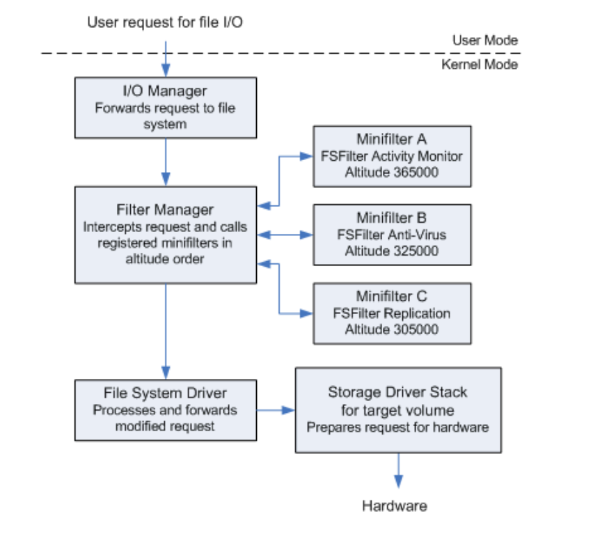
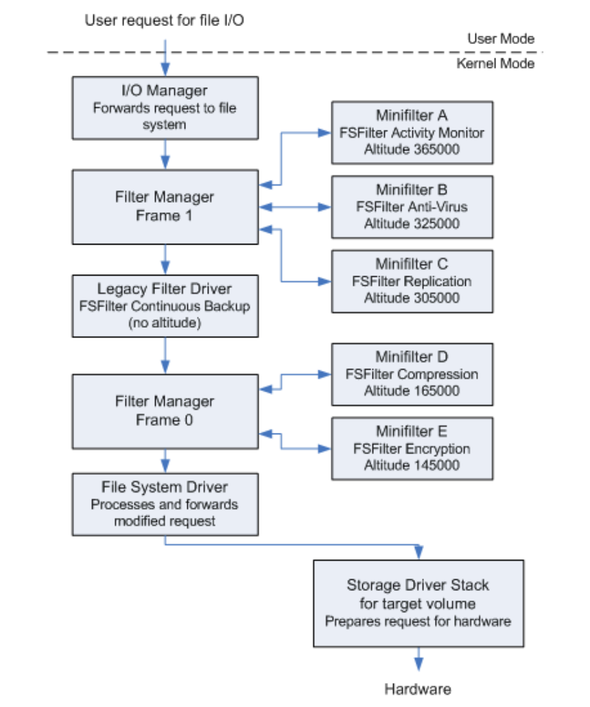
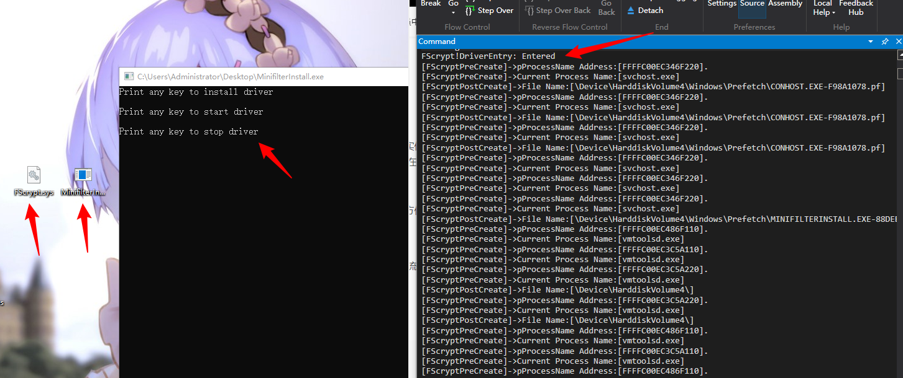

# 分层驱动框架
- NT 驱动框架：单层驱动，只能接受自己进程的 IRP
- Sfilter 驱动框架：多层驱动，接受所有进程的 IRP
- 过滤：分层驱动中再加一层而不影响它的上下层，以过滤它们之间的数据，对数据或行为进行安全控制。过滤是通过设备绑定实现的 (有多少个文件卷设备就生成多少个文件过滤驱动设备对象一一绑定，这样，发给各个卷设备对象的 IRP 都会被监控到)。
- 磁盘过滤驱动：用于文件还原
# 绑定与过滤
设备栈绑定的形式：驱动自己生成一个设备 (过滤设备), 调用系统提供的绑定 API，绑定到自标设备上，并返回一个在未绑定之前目标设备所在设备栈的最顶层设备。这样发往下层的 IRP 或者发往土层的数据都会被过滤设备截获。绑定的API:- loAttachDevice()
- loAttachDeviceToDeviceStackSafe (2000 SP4 以及 XP 以上)
- loAttachDeviceToDeviceStack()
1111111 设备栈的理解
# IoAttachDeviceToDeviceStack (绑定)
函数原型：
/// AttachedDevice 需要记录在 DEVICE_EXTENSION 中，以便调用 IoCallDriver () 继续下发 IRP | |
/// 返回一个在未绑定之前目标设备所在设备栈的最顶层设备， | |
/// 目的是为了 IRP 继续往下发，所以需要备份下一层的设备对象，即未绑定之前目标设备所在设备栈的最顶层设备 | |
PDEVICE_OBJECT IoAttachDeviceToDeviceStack( | |
IN PDEVICE_OBJECT SourceDevice, | |
IN PDEVICE_OBJECT TargetDevice | |
); |
windbg 查看设备栈:
!devobj 查看设备对象信息!drvobj 查看驱动对象信息!devstack 查看设备栈!devnode 0 1 系统设备树
# 设备对象
typedef struct _DEVICE _OBJECT | |
{ | |
SHORT Type; | |
WORD Size; | |
LONG ReferenceCount; | |
PORITER OBIECT DriverObject; ///< 生成该设备对象的驱动对象 | |
DEVICE OBTECT NextDevice; ///< 驱动对象生成的所有设备对象通过 NextDevice 指针组织在 1 个链表里 | |
PDEVICE OBTECT AttachedDevice; ///< 被哪个设备所绑定 | |
PIRP CurrentIrp; | |
PIO TIMER Timer; | |
LONG Flags; | |
LONG Characteristics; | |
PUPB Vpb; | |
VOID DeviceExtension; | |
LONG DeviceType; | |
CHAR StackSize; | |
BYTE Queue [40]; | |
LONG AlignmentRequirement: | |
DEVICE QUEUE DeviceQueue; | |
KDPC Dpc; | |
LONG ActiveThreadCount; | |
VOID SecurityDescriptor; | |
EVENT DeviceLock; | |
WORD SectorSize; | |
WORD Sparel; | |
PDEVOBT _EXTENSION DeviceObjectExtension; | |
VOID Reserved; | |
}DEVICE OBJECT, *PDEVICE_OBJECT: |
可以利用 AttachedDevice 成员遍历目标设备的设备栈。由此判断目标设备是否被我们绑定。
# 对设备对象作不同处理 (过滤)
- 控制设备对象
- DriverEntry 中创建的设备对象
- 用来接收自己客户端的 IRP
- 过滤设备对象
- 绑定时候创建的设备对象
- 用来接收其它 R3 程序的 IRP
- 分发函数将接收各进程 IRP
- 设备对象分控制设备对象和过滤设备对象，但用来接受 Irp 分发函数只有一个。
- 比如 FilterCreate (PDEVICE_OBJECT DeviceObject,PIRP plrp)，既接收自己进程的 IRP (发给 控制设备对象)，也用来接受其他进程 IRP (发给 过滤设备对象)
- 如何区分 IRP 是自己进程下发的 (发给控制设备对象)，还是别的进程下发的 (发给过滤设备对象)？
首先认识以下两个宏：
/// 宏定义 判断设备对象是否是过滤设备对象: | |
/// 1. 过滤设备对象不为空 | |
/// 2. 过滤设备对象是由驱动对象创建 | |
/// 3. 如果是过滤设备对象，DeviceExtension 保存着下一层的设备对象 | |
#define IS_MY_DEVICE OBJECT(_devObj)\ | |
(((_devObj) != NULL) &&\ | |
((_devObj)->DriverObject == gSfilterDriverObject)&&\ | |
((devObj)->DeviceExtension != NULL)) | |
/// 宏定义 判断设备对象是否是控制设备对象: | |
/// 1.gSfilterControlDeviceObject 指针保存的是在 DriverEntry 创建的控制设备对象的地址 | |
/// 2. 控制设备对象是由驱动对象创建 | |
/// 3. 如果是控制设备对象，DeviceExtension 为空 | |
#define IS_MY_CONTROL_DEVICE_OBJECT(_devObj)\ | |
(((_devObj) == gSfilterControlDeviceObject) ?\ | |
(ASSERT(((_devObj)->DriverObject == gSfilterDriverObject) && \ | |
(_devObj)->DeviceExtension == NULL)),TRUE):FALSE) |
在过滤分发函数的处理：
///xxx 表示任意的过滤分发函数 | |
NTSTATUS FilterXXX(IN PDEVICE_OBJECT DeviceObject, IN PIRP Irp) | |
{ | |
NTSTATUS status; | |
PAGED_CODE(); | |
// 判断是否是控制设备。 | |
if (IS_MY_CONTROL_DEVICE_OBJECT(DeviceObject)) | |
{ | |
Irp->IoStatus.Status = STATUS_INVALID_DEVICE_REQUEST; | |
Irp->IoStatus.Information = 0; | |
IoCompleteRequest(Irp, IO_NO_INCREMENT); | |
//return STATUS_INVALID_DEVICE_REQUEST; // 这样写的后果是：我们用 CreateFile 函数在 Ring3 下打开此控制设备符号链接的时候会失败 | |
return STATUS_SUCCESS; | |
} | |
// 判断是否是文件系统的其他设备 | |
if (!IS_MY_DEVICE_OBJECT(DeviceObject)) | |
{ | |
// 不是我们关心的设备，直接下发 | |
IoSkipCurrentIrpStackLocation(Irp); | |
return IoCallDriver(((PSFILTER_DEVICE_EXTENSION)DeviceObject->DeviceExtension)->AttachedToDeviceObject, Irp); | |
} | |
// 接下来就是处理来自卷设备 IRP 的 xxx 操作了 | |
…… | |
…… | |
} |
# 文件系统过滤框架
- Sfilter
- Minifilter
# Sfilter
sfilter 是微软的文件过滤驱动样例。
# Sfilter 代码通读分析
框架代码 不要钻牛角尖，把握整体流程即可，不求把每行代码每个变量都扣的清楚。(上万行代码)
- 除了过滤分发函数，其他代码理解即可，不需要做改动。
- 所以在 Minifilter 中就把这部分代码给封装隐藏了，只需要注册回调函数即可
代码过长，我就放到 github 了，里面有我详细的注释。
自己画的流程图：
11111111
运行效果：
11111 gif
# 过滤驱动与 IRP 处理方式
1. IoCopyxxX+完成例程 下发
IoCopyCurrentlrpStackLocationToNext+完成例程：把 IRP 下发之后，上层驱动在某个事件上进行等待。下一层驱动把 IRP 完成之后就会调用完成例程设置事件为有事件状态来通知上层驱动
/// 拿到当前 IRP 的栈 | |
/// 拿到下一层 IRP 的栈 | |
/// 把当前 IRP 的栈拷贝到下一层 IRP 的栈上，因为当前 IRP 还没下发，所以下一层 IRP 的栈是空的，所以不存在下层 IRP 栈原来有数据被覆盖的问题 | |
#define IoCopycurrentIrpStackLocationToNext (Irp){\ | |
PIO_STACK_LOCATION __irpSp;\ | |
PI0_STACK_LOCATION __nextIrpSp;\ | |
__irpsp = IoGetcurrentIrpstackLocation((Irp));\ | |
__nextIrpSp =IoGetNextIrpstackLocation((Irp));\ | |
RtlCopyMemory( __nextIrpSp,__irpSp,FIELD__OFFSET(IO_STACK_IOCATIONCompletionRoutine));\ | |
nextIrpSp->control = O;} |
2. IoSkip+IoCall 直接下发
IoSkipCurrentIrpStackLocation，下层设备拿到的 IO_STACKLOCATION 和当前的一样
#define IoskipcurrentIrpStackLocation(Irp){\ | |
(Irp)->currentLocation++; \ | |
... | |
/// 相互抵消，相当于 IRP 栈没有发生变化，下一层驱动对应的 IRP 栈和当前驱动用的是同一个栈，好像 IRP 从来没有到达过当前的驱动层一样 | |
/// 为什么不用像第一种方式一样需要拷贝栈数据？是因为当前驱动不需要知道下一层的 IRP 结果，就不需要保存当前驱动对应 IRP 栈的的空间了 | |
/// 为什么不直接不加不减？因为下发必然会减 (IoCallDriver)，为保持下一层使用当前驱动对应的 IRP 栈，所以需要先加 | |
IoskipcurrentIrpstackLocation(Irp);//location+1 | |
IoCallDriver(deviceExtension->nextLower,Irp);//location-1 |
3. 结束IRP 不下发
/// 一般用于拒绝的时候 | |
PIO_STACK_LOCATION irpStack= IoGetCurrentlrpStackLocation(Irp); | |
Irp->loStatus.Status = STATUS_ACCESS_DENIED;//STATUS_ACCESS_DENIED | |
irp->loStatus.Information = O | |
IoCompleteRequest(lrp, IO_NO_INCREMENT); |
# IRP 完成例程注意事项
在驱动程序将 IRP 传递个下一个驱动之后，就不再拥有这个 IRP，并且不能试图再去访问它。否则会导致系统崩溃（蓝屏）。
- 那个 IRP 会被其它的驱动或者线程
释放或完成。 - 如果驱动需要访问一个已经在栈里传下去的 IRP, 这个驱动必须实现并设置
IoCompletion例程。 - 当 I/O 管理器调用
IoCompletion例程时，这个驱动就能够在IoCompletion 例程执行期间重新获得对这一 IRP 的所有权。如此，loCompletion 例程就能够访问 IRP 中的域。
- 那个 IRP 会被其它的驱动或者线程
若是驱动的分发例程也还需要在 IRP 被后面的驱动处理完成之后再处理它，这个 IoCompletion 例程必须返回
STATUS_MORE_PROCESSING_REQUIRED，以将 IRP 的所有权返回给分发例程。- 如此一来，I/O 管理器会停止 IRP 的处理，将最终完成 IRP 的任务留给分发例程。分发例程能够在之后调用
IoCompleteRequest来完成这个 IRP, 或者还能将这个 IRP 标记为等候进一步处理。
- 如此一来，I/O 管理器会停止 IRP 的处理，将最终完成 IRP 的任务留给分发例程。分发例程能够在之后调用
# IoCopyxxX+完成例程 下发
/// IoCopyxxX + 完成例程 下发 | |
/// 分发例程 | |
KEVENT event; | |
KelnitializeEvent(&event, NotificationEvent,FALSE); ///< 设置一个事件 | |
IoCopyCurrentlrpStackLocationToNext(Irp); /// 把当前驱动对应的 IRP 栈数据拷贝到下一层驱动上 IRP 栈上 | |
/// 为当前 IRP 设置一个完成例程 | |
/// 驱动需要访问一个已经在栈里传下去的 IRP, 这个驱动必须实现并设置 `IoCompletion` 例程。 | |
IoSetCompletionRoutine(Irp, | |
IoCompRoutine, | |
&event, | |
TRUE,TRUE,TRUE | |
); | |
/// 将 IRP 往下发 | |
status = IoCallDriver(DeviceObject,Irp); | |
/// 如果 IRP 处于 pending 状态，就在这个事件上等待 | |
if (status == STATUS_PENDING) | |
{ | |
status = KeWaitForSingleObject(&event, | |
Executive, | |
KernelMode, | |
FALSE, | |
NULL | |
); | |
ASSERT(NT_SUCCESS(status)); | |
/// 驱动的分发例程也还需要在 IRP 被后面的驱动处理完成之后再处理它，一般在驱动程序将 IRP 传递个下一个驱动之后，就不再拥有这个 IRP，并且不能试图再去访问它。否则会导致系统崩溃。因为那个 IRP 会被其它的驱动或者线程 `释放或完成`。这里可以访问是因为设置了完成例程，并且这个 IoCompletion 例程返回了 `STATUS_MORE_PROCESSING_REQUIRED` | |
status = Irp->IoStatus.Status; | |
IoFreelrp(Irp) ///< 原本有完成例程负责 Irp 的销毁，这时候就需要交给分发例程来做了 | |
} | |
/// 完成例程 | |
NTSTATUS IoCompRoutine( | |
IN PDEVICE_OBJECT DeviceObject, | |
IN PIRP Irp, | |
IN PVOID Context | |
) | |
{ | |
PKEVENT event = Context; | |
/// 当 I/O 管理器调用 `IoCompletion` 例程时，这个驱动就能够在 IoCompletion `例程执行期间` 重新获得对这一 IRP 的所有权。 | |
/// 如此，IoCompletion 例程就能够访问 IRP 中的域。 | |
Irp->UserIosb->Status = Irp->IoStatus.Status; | |
Irp->UserIosb->Infomation = Irp->IoStatus.Information; | |
KeSetEvent(event,IO_NO_INCREMENT, FALSE); | |
//IoFreelrp (Irp) ///< 原本有完成例程负责 Irp 的销毁，这时候就需要交给分发例程来做了 | |
return STATUS_MORE_PROCESSING_REQUIRED; | |
/// 返回 STATUS_MORE_PROCESSING_REQUIRED，以将 IRP 的所有权返回给 `分发例程` | |
/// I/O 管理器会停止 IRP 的处理，将最终完成 IRP 的在务留给分发例程。分发例程能够在之后调用 `IoCompleteRequest` 来完成这个 IRP, 或者还能将这个 IRP 标记为等候进一步处理。 | |
} |
# IoSkip+IoCall 直接下发
- 对 IRP 没有任何改动的时候，比如放行
PDEVICE_EXTENSION deviceExtension; | |
IoSkipCurrentlrpstackLocation(lrp); | |
/// 拿到保存在设备扩展里的下层设备 deviceExtension | |
(PDEVICE_EXTENSION) DeviceObject->DeviceExtension; | |
/// 下发 | |
/// 在驱动程序将 IRP 传递个下一个驱动之后，就不再拥有这个 IRP，并且不能试图再去访问它。否则会导致系统崩溃。 | |
/// 因为这个 IRP 会被其它的驱动或者线程 `释放或完成`。 | |
return IoCallDriver(deviceExtension->TargetDeviceObject,Irp); |
# 错误的下发方式:
/// 没有设置完成例程（并且在完成例程中返回 STATUS_MORE_PROCESSING_REQUIRED，以将 IRP 的所有权返回给 `分发例程`） | |
// Forward request to next driver | |
IoCopyCurrentlrpStackLocationToNext(Irp) | |
// Send the lRP down | |
status IoCallDriver(nextDevice,Irp); | |
// The following is an error because thisdriver | |
// no longer owns the IRP | |
if(status == STATUS_PENDING) | |
{ | |
IoMarklrpPending(Irp); // 错误，无权操作 Irp 了 | |
} | |
// Return the lower driver's status | |
return status; |
# 基于 Sfilter 的 HIPS
- 监控敏感目录 (全盘监控效率低)
- 防勒索工具
# 过滤分发函数
过滤分发函数中所需要做的事情：
FilterCreate（创建)- 病毒和木马进入系统肯定会生成一些文件，比如释放
.sys,.dll文件或者一个链接等等都属于文件创建操作 - 全局监控太耗性能，只监控一些敏感的区域比较好
- 病毒和木马进入系统肯定会生成一些文件，比如释放
FilterRead(一般不拦，加解密处理)- 读操作不会修改文件，但是如果作为
隐私保护器，那需要拦截，防止别人读取文件 - 加解密中也要拦截， 读操作这时候是解密
- 读操作不会修改文件，但是如果作为
FilterWrite（修改，小心加解密处理)- 修改文件肯定要拦截
- 加解密中也要拦截， 写操作这时候是加密
FilterSetInfo(删，重命名)- 删，重命名对应 IRP_MJ_SET_INFORMATION 下的次功能号，所以也需要拦
FilterClose(一般不拦)FilterClean（写关闭等)- 写关闭：写操作完成之后关闭，要拦截。
- 比如，一个病毒特征码是
foul, 要把病毒写到文件中去，直接写foul, 在写的时候就会被杀毒软件匹配并拦截到。但每次写的时候只写一部分，第 1 次写f，第 2 次写o，第 3 次写u，第 4 次写l，写完之后文件保存就是foul，绕过了杀毒软件的查杀。所以要在每次写完的关闭之前都需要扫描一遍文件是不是匹配病毒特征码，所以写关闭是需要拦截的。 - 写关闭有时候无法直接区分，因为打开文件再关闭，
关闭之前不知道是读还是写，在 xp 里面，关闭的时候 information 是 2 则表示是写，win7 及以后版本则没有了这些标志。 - 所以在 Sfilter 里面，往往是通过文件的修改时间来判断，如果是在
1min之内则认为是写关闭。 - Minifilter 里面有
上下文，写操作在打开文件的时候我们是知道的，因为打开文件的时候带写权限，把信息记录下来通过上下文的形式传给关闭操作的。
# 代码详解
# Minifilter
# Minifilter 与 legacy filter (Sfilter) 区别
新一代的文件过滤驱动框架: Minifilter
比 sfilter
加载顺序更易控制。altitude被绑定到合适的位置。可卸载能力。- 系统不重启的情况下，HOOK 不支持卸载，卸载可能会蓝屏，是因为有的 IRP 可能没有立即返回，会被
pending起来，如果这时候把 hook 的函数卸载，当重新回来执行的时候，函数的地址就失效了，内存无效，蓝屏。 - 解决方法：引用计数
- minifiler 驱动是向 minifiler 框架注册的，minifilter 驱动卸载了，框架还在，就不会造成类似 HOOK 函数卸载后的问题
- 系统不重启的情况下，HOOK 不支持卸载，卸载可能会蓝屏，是因为有的 IRP 可能没有立即返回，会被
Callback 模型
仅需处理必要操作的能力 (pre_create,post create)- 相当于把 Sfilter 的分发函数分为两部分：
pre_create(IRP 下发之前),post create(IRP 处理完之后) - 如果不想处理 IRP 就不需要注册对应的回调函数 (如果是 Sfilter 则需要为不处理的 IRP 注册一个
通用的过滤分发函数) - 绑定过滤设备对象动作
被隐藏
- 相当于把 Sfilter 的分发函数分为两部分：
兼容性更好- hook 会打架，谁后生成谁优先
- Sfiler 不可卸载
- Minifilter 都没有上述问题
名字处理更容易- Minifilter 拿文件名只需直接调用函数就可以了
安装方式 (.inf 或者用代码动态加载)
- 动态安装，创建几个与之相关的注册表的键即可
通信方式 (port)
- 基于端口通信，效率非常高，应用层可以多个线程处理内核层发送的请求，每个线程也可以处理多个请求。
同样遵循 IRQL, 锁等内核开发通用机制
FltCreateFile/ZwCreateFile
- Minifilter 中不建议使用
Zw*函数，而是使用Flt*函数，避免重入(死循环)
- Minifilter 中不建议使用
# Minifilter 框架
# Minifilter
下图显示了一个简化的 I/O 堆栈，其中包含过滤管理器和三个微型过滤驱动程序。

I/O Nanager: 负责把应用层的 IO 请求封装成 IRP 包，发送给Filter ManagerFilter Manager Frame: 把 IRP 重新组装成FLT_CALLBACK_DATA结构体，把这个结构体传给逐层传给 Minifilter 驱动 A，B，C (Altitude 值不一样，每次加载的时候相对关系是固定的，值大的在上层，越优先处理)，即 Minifilter 中没有 IRP 这一说法了，处理 IO 数据的时候都是从FLT_CALLBACK_DATA结构体中拿数据。
# Minifilter 与 Sfilter 共存
下图显示了一个简化的 I/O 堆栈，其中包含两个过滤管理器帧、微型过滤驱动程序实例和旧过滤驱动程序。

- Legacy Filter Driver：指的是
Sfilter驱动，虽然夹在两个Filter Manager Frame, 但 Sfilter 驱动是没有高度的。Sfilter 驱动可以在Filter Manager Frame的上面也可以在下面，二者之间没有说谁的级别比谁的级别高。
# Altitude 值
20000-429999
每一个
minifilter驱动必须有一个叫做altitude的唯一标识符。一个 minifilter 驱动的 altitude 定义了它加载时在 I/O 栈中相对其他 minifilter 驱动的位置。值越小，栈中位置就越低。FSFilter Anti-Virus 320000-329999
- 此组包括在文件 I/O 期间探测并杀毒的过滤驱动。
反病毒在加解密之前是合理的，如果加解密在前面，把文件加密了，反病毒就无法识别病毒特征码了。
FSFilter Encryption 140000-149999
- 此组包括在文件 I/O 期间
加密和解密数据的过滤驱动。
- 此组包括在文件 I/O 期间
# Minifilter 中的结构和定义
FLT_REGISTRATION的定义
// https://docs.microsoft.com/en-us/windows-hardware/drivers/ifs/managing-contexts-in-a-minifilter-driver | |
const FLT_REGISTRATION fileMonitorRegistration = | |
{ | |
sizeof( FLT_REGISTRATION), ///< Size | |
FELT_REGISTRATION_VERSION, ///< Version | |
0, ///< Flags | |
ContextRegistration, ///< ContextRegistration | |
fileMonitorCallbacks, ///< Operation callbacks, 结构体数组，每一个结构体封装了 IRP 和与之对应的回调函数，注册的回调函数就是放在这个结构体数组里 | |
fileMonUnload, ///< FilterUnload, 在 Minifilter 卸载时调用，做一些清理工作 | |
fileMonInstanceSetup, ///< InstanceSetup，instance 类似 Sfilter 中的过滤设备对象，有多少的卷设备就生成多个实例与之绑定，生成的过程是不可见的（看不到生成实例的代码，是由框架去做的），instance 的数量和卷设备对象的数量相等的，一一对应。 | |
///< 调用时机：把 Minifilter 的实例绑定到卷设备对象上会调用这个函数 | |
///< 作用：可以记录下 instance 对应卷设备的一些属性，比如说是 C 盘还是 D 盘，文件类型是 FAT32 还是 NTFS，卷的扇区大小是 512B 还是 4KB。存到一个上下文里面（是个缓存），下次用到的时候，之间从缓存里面拿数据既可以了，提高效率。 | |
NULL, ///< InstanceQuery Teardown | |
fileMonInstanceTeardownStart, ///< InstanceTeardownStart | |
NULL, ///< InstanceTeardownComplete | |
NULL, ///< GenerateFileName | |
NULL, ///< GenerateDestinationFileName | |
NULL ///< NormalizeNameComponent | |
}; |
fileMonitorCallbacks结构体数组的定义
const FLT_OPERATION_REGISTRATION fileMonitorCallbacks[]= | |
{ | |
{ | |
IRP_MJ_CREATE, /// 表示创建或者打开 IRP 的回调函数 | |
FLTFL_OPERATION_REGISTRATION_SKIP_PAGlNG_IO, // Flag，忽略掉 paging_io | |
HOOK_PreNtCreateFile, /// 可以缺省其中一个 | |
HOOK_PostNtCreateFile /// 可以缺省其中一个 | |
}, | |
{ | |
IRP_MJCLEANUP, | |
0， | |
HOOK_PreNtCleanup, | |
NULL | |
}, | |
{ | |
IRP_MJ_WRITE, | |
0, | |
HOOK_PreNtWriteFile, | |
HOOK_PostNtWriteFile | |
}, | |
{ | |
lRP_MJ_SETLINF ORMATION, | |
0, | |
HOOK_PreNtSetInformationFile, | |
HOOK_PostNtSetInformationFile | |
}, | |
IRPZMJ_ORERATION_END | |
} | |
}; |
文件带缓存 IO:
- 预先读入文件和延迟写入文件。在读 / 写文件的时候，为了提高效率，文件带缓冲进行 IO 操作，读的时候提前读入目标旁边的数据，写的时候会延迟写 (
集中起来一次性写入)，因为磁盘是低速设备，减少 IO 次数是能提高效率的。 - 当 ReadFile 时，会调用 NtReadFile () 系统调用，它会构造一个 IRP 下发到 FSD，FSD 会检查这个 IRP 看是不是可以缓存的，是的话，如果还没有为此文件建立缓存的话，就会调用 CclnitializeCacheMap () 函数建立缓存，它里面会调用内存管理器 (VMM）函数建立一个节对象。
- 当用到时，会把这个节对象 (和文件关联) 映射到内核空间。如果 IRP 是可缓存的，则调用 CcCopyRead 函数进行从缓存中读入文件。
- 如果此文件还没有在内存中，则会产生页面错误，交给 MmAccessFault () 函教处理，它会调用 loPageRead iO 分配一个不缓存的 IRP (IRP_PAGING_lO)，但是它会走 FSD，不会调用缓存的函数，而是最终调用磁盘驱动进行真实的磁盘读写读入到内存。
- 之后 CcCopyRead () 再不会产生错误了，会从缓存复制到用户 Buffer 中
- 预先读入文件和延迟写入文件。在读 / 写文件的时候，为了提高效率，文件带缓冲进行 IO 操作，读的时候提前读入目标旁边的数据，写的时候会延迟写 (
IRP_PAGING_IO:
- 情况 1.
IRP_NOCACHE&& 非IRP_XXX_ PAGING _IO, 也就是用户程序设置 FILE_NO_INTERMEDIATE_BUFFERING, 流程是 App->IO->FSD->DISK - 情况 2.
IRP_CACHE&& 非IRP_XXX_PAGING_IO, 也就是用户程序默认设置，流程是 APP->IO->FSD-CC (Cache Manger)->MM (->FSD-DISK) IRP_PAGING_IO: 在情况 2 中：MM 会发起一个 IRP 并标记为IRP_XXX_PAGING_IO, 流程是 MM->FSD->DISK (on behalt of vm), 所以IRP_PAGING_IO不是由用户程序发起的，而是由内存管理器发起的，所以不需要监控。- 如果设置了 IRP_XXX_PAGING_IO, 那就是 MM 内部用的 IRP,CACHE 标记此时没有意义 (on behalft of vmn)
- 发给磁盘的机会:
- 1.
FILE_NO_INTERMEDIATE_BUFFERING&& 非IRR_XXX_PAGING_IO的时候会发给 DISK，即 App->IO->FSD->DISK - 2.
IRP_XXX_PAGING_IO时候会发给 DISK，即 MM->FSD->DISK
- 情况 1.
预操作回调函数和后操作回调函数的定义
/// 以 create 操作为例 | |
///create 执行之前调用 | |
FLT_PREOP_CALLBACK_STATUS HOOK_PreNtCreateFile( | |
PFLTCALLBACK_DATA Data, ///Filter Manager Frame 将 IRP 重新组装成 `FLT_CALLBACK_DATA` 结构体 | |
PCFLT_RELATED_OBJECTS FltObjects, /// 与 Minifilter 相关的对象 | |
PVOID *CompletionContext /// 分配的一个 context 资源，可以传给 Post 函数处理，然后在 Post 函数释放掉 context 资源 | |
) | |
//sandbox | |
// 主防 | |
// 杀毒引擎 | |
// 加解密 | |
return xxx; /// 这个返回值是返回给 Minifilter 管理器的，拿到返回值之后再决定要不要把操作继续往下发给 Mnifilter 驱动或者 Sfilter 驱动 | |
/// Data->IoStatus.Status = STATUS_ACCESS_DENIED; 这个才是返回给 IO 管理器的，即应用层 | |
/// PRE-OP 的返回值：(和 sfilter 比较) | |
/// FLT_PREOP_SUCCESS_WITH_CALLBACK // 告诉 Minifilte 管理器要把操作往下发，结束之后要调用 Post, 类似 Sfilter 中 `IoCopyxxX + 完成例程` 将 IRP 下发 | |
/// FLTPREOP_SUCCESS_NO_CALLBACK // 告诉 Minifilte 管理器要把操作往下发，结束之后但不需要调用 Post, 类似 Sfilter 中 `IoSkip+IoCall` 直接下发 | |
/// FLT_PREOP_PENDING // 挂起 | |
/// FLT PREOP DISALLOW_FASTIO // 禁用 fastio | |
/// FLT_PREOP_COMPLETE // 告诉 Minifilte 管理器要把操作完成之后不下发了，当前为止，不下发有拒绝 (STATUS_ACCESS_DENIED), 成功完成 (STATUS_ACCESS) | |
/// FLT_PREOP_SYNCHRONIZE // 同步 | |
} | |
///create 完成之后创建 | |
FLT_POSTOP_CALLBACK_STATUS HOOK_PostNtCreateFile( | |
PFLT_CALLBACK_DATA Data, | |
PCFLT RELATED_OBJECTS FltObjects, | |
PVOID completionContext， // 在 PRE-OP 里返回 FLT_PREOPsuCcEss_wITH_CALLBACK 时获取里面的上下文，并最后释放 Context 资源 | |
FLT_POST_OPERATION_FLAGS Flags | |
) | |
{ | |
return xxx; | |
// POST-OP 的返回值: | |
// FLT_POSTOP_FINISHED_PROCESSING // 最终完成处理 | |
// FLT_POSTOP_MORE_PROCESSING_REQUIRED //post 处理完之后，还需要更多处理，一般发生在 Post 里面，如果 Irql 比较高，比如处于 DISPATCH_LEVEL，这样需要做一些操作的时候，是需要开一个工作者线程去做，这时候就需要返回一个 FLT_POSTOP_MORE_PROCESSING_REQUIRED | |
} | |
FltObjects->volume,FltObjects->Instance,FltObjects->FileObject, | |
FltObjects->FileObject->DeviceObject |
判断Data是什么操作的宏
FLT_IS_IRP_OPERATION /// 应用下发的 IRP | |
FLT_IS_FASTIO_OPERATION /// 走缓存 | |
FLJ IS_FS_FILTER_OPERATION /// 其他 Minifilter 或者 Sfilter 下发的 | |
//eg：禁用 fastio | |
if(FLT_IS_FASTIO_OPERATION(Data)) /// 为真则是 Fasdtio 操作 | |
{ | |
ntStatus STATUS_FLT DISALLOW_FAST_I0; | |
Data->loStatus.status = ntStatus; | |
Data->loStatus.Information = 0; | |
return FLT_PREOR_DISALLOW_FASTIO; | |
} |
参数数据的获取
PFLT_CALLBACK_DATA Data; | |
PEPROCESS processObject = Data->Thread ? loThreadToProcess(Data->Thread) : PsGetCurrentProcess(); /// 把 Thread 转换成 Exprocess 结构 | |
HandleToUlong(PsGetProcessld(processObject));/// 通过 Eprocess 结构拿到 PID | |
Data->IoStatus.Status = ntStatus; ///pIrp->loStatus.Status=ntStatus; | |
Data->IoStatus.Information = 0; /// 跟 IRP 类似 | |
FltObjects->Volume, /// 卷设备对象 | |
FltObjects->Instance, /// 实例对象和 Volume 一一对应 | |
FltObjects->FileObject, /// 要被操作目标文件的内核对象 | |
FltObjects-FileObject->DeviceObject /// 文件所在的设备对象 | |
PMDE pReadMdl = Data->lopb->Parameters.Read.MdlAddress; ///MdlAddress!=NULL 使用的是 direct io | |
PVOID pReadBuffer = Data->Iopb->Parameters.ReadBuffer;///MdlAddress==NULL 使用的是 readbuffer | |
ULONG uReadLength = Data->lopb->Parameters.Read.Length; /// 读数据的长度 | |
Data->Iopb->Parameters.create.SecurityContext->DesiredAccess /// 如果是创建，创建的一些操作可以拿到，比如说以写的方式，读的方式还是读写的方式等 | |
PVOID pQueryBuffer | |
Data>Iopb->Parameters.DirectoryControl.QueryDirectory.DineectoryBuffer; | |
/// 查询文件夹的 buffer | |
ULONG uQueryBuffersize = Data->lopb->Parameters.DirectoryControl.QueryDirectory.Length; /// 查询文件夹的 buffer 长度 | |
/// 返回 | |
Data->IoStatus.Status = STATUS_ACCESS_DENIED; | |
Data->IoStatus.Information = 0; | |
return FLT_PREOP_COMPLETE; |
启动mifilter
/// 注册 | |
/// 自己封装的一个 initFileMonitor | |
NTSTATUS initFileMonitor(PDRIVER_OBJECT DriverObject ) | |
{ | |
//fileMonitorRegistration 结构体传给 FltRegisterFilter 函数进行注册，得到句柄 g_pFilter | |
return FltRegisterFilter( DriverObject, | |
&fileMonitorRegistration, | |
&g_pFilter); | |
} | |
/// 启动 | |
NTSTATUS startFileMonitor() | |
{ | |
if(g_pFilter) | |
// 启动 Minifilter 驱动，以后所有与 Write，READ，SET_INFORMATION 等相关的 IO 操作依次会被 _Pre* 和 _Pos * 函数拦截 | |
return FltStartFiltering(g_pFilter); | |
return STATUS_INSUFFICIENT_RESOURCES, | |
} | |
/// 卸载 | |
VOID stopFileMonitor() | |
{ | |
if(g_pFilter) | |
{ | |
FltUnregisterFilter(g_pFilter); // 卸载时会调用 fileMonitorRegistration.fileMonUnload 来释放一些资源 | |
g_pFilter = NULL; | |
} | |
} |
# Minifilter 的安装方式
# .inf 格式安装
当我们创建 Minifilter 项目的时候 VS 编译器会自动给我们生成一个格式。我们只需要修改一下几个关键点就可以了，其中也有微软的注释。
;;; | |
;;; xxxx 是驱动项目的名字 | |
;;; | |
[Version] | |
Signature = "$Windows NT$" | |
; TODO - Change the Class and ClassGuid to match the Load Order Group value, see https://msdn.microsoft.com/en-us/windows/hardware/gg462963 | |
; Class = "ActivityMonitor" ;This is determined by the work this filter driver does | |
; ClassGuid = {b86dff51-a31e-4bac-b3cf-e8cfe75c9fc2} ;This value is determined by the Load Order Group value | |
Class = "ActivityMonitor" | |
ClassGuid = {b86dff51-a31e-4bac-b3cf-e8cfe75c9fc2} | |
Provider = %ManufacturerName% | |
DriverVer = | |
CatalogFile = xxxx.cat | |
PnpLockDown=1 | |
[DestinationDirs] | |
DefaultDestDir = 12 | |
MiniFilter.DriverFiles = 12 ;%windir%\system32\drivers | |
;; | |
;; Default install sections | |
;; | |
[DefaultInstall] | |
OptionDesc = %ServiceDescription% | |
CopyFiles = MiniFilter.DriverFiles | |
[DefaultInstall.Services] | |
AddService = %ServiceName%,,MiniFilter.Service | |
;; | |
;; Default uninstall sections | |
;; | |
[DefaultUninstall] | |
DelFiles = MiniFilter.DriverFiles | |
[DefaultUninstall.Services] | |
DelService = %ServiceName%,0x200 ;Ensure service is stopped before deleting | |
; | |
; Services Section | |
; | |
[MiniFilter.Service] | |
DisplayName = %ServiceName% | |
Description = %ServiceDescription% | |
ServiceBinary = %12%\%DriverName%.sys ;%windir%\system32\drivers\ | |
Dependencies = "FltMgr" | |
ServiceType = 2 ;SERVICE_FILE_SYSTEM_DRIVER | |
StartType = 3 ;SERVICE_DEMAND_START | |
ErrorControl = 1 ;SERVICE_ERROR_NORMAL | |
; TODO - Change the Load Order Group value | |
; LoadOrderGroup = "FSFilter Activity Monitor" | |
LoadOrderGroup = "_TODO_Change_LoadOrderGroup_appropriately_" | |
AddReg = MiniFilter.AddRegistry | |
; | |
; Registry Modifications | |
; | |
[MiniFilter.AddRegistry] | |
HKR,,"DebugFlags",0x00010001 ,0x0 | |
HKR,,"SupportedFeatures",0x00010001,0x3 | |
HKR,"Instances","DefaultInstance",0x00000000,%DefaultInstance% | |
HKR,"Instances\"%Instance1.Name%,"Altitude",0x00000000,%Instance1.Altitude% | |
HKR,"Instances\"%Instance1.Name%,"Flags",0x00010001,%Instance1.Flags% | |
; | |
; Copy Files | |
; | |
[MiniFilter.DriverFiles] | |
%DriverName%.sys | |
[SourceDisksFiles] | |
xxxx.sys = 1,, | |
[SourceDisksNames] | |
1 = %DiskId1%,,, | |
;; | |
;; String Section | |
;; | |
[Strings] | |
; TODO - Add your manufacturer | |
ManufacturerName = "Template" | |
ServiceDescription = "xxxx Mini-Filter Driver" | |
ServiceName = "xxxx" | |
DriverName = "xxxx" | |
DiskId1 = "xxxx Device Installation Disk" | |
;Instances specific information. | |
DefaultInstance = "xxxx Instance" | |
Instance1.Name = "xxxx Instance" | |
; TODO - Change the altitude value, see https://msdn.microsoft.com/en-us/windows/hardware/drivers/ifs/load-order-groups-and-altitudes-for-minifilter-drivers | |
Instance1.Altitude = "370030" | |
Instance1.Flags = 0x0 ; Allow all attachments |
- 对于
.inf文件，可以右键选择安装。 - 也可以直接调用 API
;; 加载 | |
SetupCopyOEMlnf | |
;; 或者 | |
InstallHinfSection(NULL, NULL,TEXT("DefaultInstall128 .\\myfilter.inf"), 0); | |
;; 卸载 | |
InstallHinfSection(NULL, NULL,TEXT("DefaultUninstall128 .\\upfilter.inf"), 0); |
# 动态加载
// MinifilterInstall.cpp : Defines the entry point for the console application. | |
// | |
#include "stdafx.h" | |
#include <windows.h> | |
#include <winioctl.h> | |
#include <winsvc.h> | |
#include <stdio.h> | |
#include <conio.h> | |
//#include <fltuser.h> | |
//#include <dontuse.h> | |
#define DRIVER_NAME "驱动项目名字" | |
#define DRIVER_PATH ".\\驱动项目名字.sys" | |
#define DRIVER_ALTITUDE "370020" // 这里没有使用 UNICODE 编码，导致安装不生效，是因为工程是宽字节的工程，如果是多字节工程那就没问题 | |
// SYS 文件跟程序放在同个目录下 | |
// InstallDriver(DRIVER_NAME,DRIVER_PATH,DRIVER_ALTITUDE); | |
// 启动驱动服务 StartDriver (DRIVER_NAME); | |
// 停止驱动服务 StopDriver (DRIVER_NAME); | |
// 卸载服务 DeleteDriver (DRIVER_NAME); | |
BOOL InstallDriver(const char* lpszDriverName,const char* lpszDriverPath,const char* lpszAltitude) | |
{ | |
char szTempStr[MAX_PATH]; | |
HKEY hKey; | |
DWORD dwData; | |
char szDriverImagePath[MAX_PATH]; | |
if( NULL==lpszDriverName || NULL==lpszDriverPath ) | |
{ | |
return FALSE; | |
} | |
// 得到完整的驱动路径 | |
GetFullPathName(lpszDriverPath, MAX_PATH, szDriverImagePath, NULL); | |
SC_HANDLE hServiceMgr=NULL;// SCM 管理器的句柄 | |
SC_HANDLE hService=NULL;// NT 驱动程序的服务句柄 | |
// 打开服务控制管理器 | |
hServiceMgr = OpenSCManager( NULL, NULL, SC_MANAGER_ALL_ACCESS ); | |
if( hServiceMgr == NULL ) | |
{ | |
// OpenSCManager 失败 | |
CloseServiceHandle(hServiceMgr); | |
return FALSE; | |
} | |
// OpenSCManager 成功 | |
// 创建驱动所对应的服务 | |
hService = CreateService( hServiceMgr, | |
lpszDriverName, // 驱动程序的在注册表中的名字 | |
lpszDriverName, // 注册表驱动程序的 DisplayName 值 | |
SERVICE_ALL_ACCESS, // 加载驱动程序的访问权限 | |
SERVICE_FILE_SYSTEM_DRIVER, // 表示加载的服务是文件系统驱动程序 | |
SERVICE_DEMAND_START, // 注册表驱动程序的 Start 值 | |
SERVICE_ERROR_IGNORE, // 注册表驱动程序的 ErrorControl 值 | |
szDriverImagePath, // 注册表驱动程序的 ImagePath 值 | |
"FSFilter Activity Monitor",// 注册表驱动程序的 Group 值 | |
NULL, | |
"FltMgr", // 注册表驱动程序的 DependOnService 值 | |
NULL, | |
NULL); | |
if( hService == NULL ) | |
{ | |
if( GetLastError() == ERROR_SERVICE_EXISTS ) | |
{ | |
// 服务创建失败，是由于服务已经创立过 | |
CloseServiceHandle(hService); // 服务句柄 | |
CloseServiceHandle(hServiceMgr); // SCM 句柄 | |
return TRUE; | |
} | |
else | |
{ | |
CloseServiceHandle(hService); // 服务句柄 | |
CloseServiceHandle(hServiceMgr); // SCM 句柄 | |
return FALSE; | |
} | |
} | |
CloseServiceHandle(hService); // 服务句柄 | |
CloseServiceHandle(hServiceMgr); // SCM 句柄 | |
//------------------------------------------------------------------------------------------------------- | |
// SYSTEM\\CurrentControlSet\\Services\\DriverName\\Instances 子健下的键值项 | |
//------------------------------------------------------------------------------------------------------- | |
strcpy(szTempStr,"SYSTEM\\CurrentControlSet\\Services\\"); | |
strcat(szTempStr,lpszDriverName); | |
strcat(szTempStr,"\\Instances"); | |
if(RegCreateKeyEx(HKEY_LOCAL_MACHINE,szTempStr,0,"",REG_OPTION_NON_VOLATILE,KEY_ALL_ACCESS,NULL,&hKey,(LPDWORD)&dwData)!=ERROR_SUCCESS) | |
{ | |
return FALSE; | |
} | |
// 注册表驱动程序的 DefaultInstance 值 | |
strcpy(szTempStr,lpszDriverName); | |
strcat(szTempStr," Instance"); | |
if(RegSetValueEx(hKey,"DefaultInstance",0,REG_SZ,(CONST BYTE*)szTempStr,(DWORD)strlen(szTempStr))!=ERROR_SUCCESS) | |
{ | |
return FALSE; | |
} | |
RegFlushKey(hKey);// 刷新注册表 | |
RegCloseKey(hKey); | |
//------------------------------------------------------------------------------------------------------- | |
// SYSTEM\\CurrentControlSet\\Services\\DriverName\\Instances\\DriverName Instance 子健下的键值项 | |
//------------------------------------------------------------------------------------------------------- | |
strcpy(szTempStr,"SYSTEM\\CurrentControlSet\\Services\\"); | |
strcat(szTempStr,lpszDriverName); | |
strcat(szTempStr,"\\Instances\\"); | |
strcat(szTempStr,lpszDriverName); | |
strcat(szTempStr," Instance"); | |
if(RegCreateKeyEx(HKEY_LOCAL_MACHINE,szTempStr,0,"",REG_OPTION_NON_VOLATILE,KEY_ALL_ACCESS,NULL,&hKey,(LPDWORD)&dwData)!=ERROR_SUCCESS) | |
{ | |
return FALSE; | |
} | |
// 注册表驱动程序的 Altitude 值 | |
strcpy(szTempStr,lpszAltitude); | |
if(RegSetValueEx(hKey,"Altitude",0,REG_SZ,(CONST BYTE*)szTempStr,(DWORD)strlen(szTempStr))!=ERROR_SUCCESS) | |
{ | |
return FALSE; | |
} | |
// 注册表驱动程序的 Flags 值 | |
dwData=0x0; | |
if(RegSetValueEx(hKey,"Flags",0,REG_DWORD,(CONST BYTE*)&dwData,sizeof(DWORD))!=ERROR_SUCCESS) | |
{ | |
return FALSE; | |
} | |
RegFlushKey(hKey);// 刷新注册表 | |
RegCloseKey(hKey); | |
return TRUE; | |
} | |
BOOL StartDriver(const char* lpszDriverName) | |
{ | |
SC_HANDLE schManager; | |
SC_HANDLE schService; | |
if(NULL==lpszDriverName) | |
{ | |
return FALSE; | |
} | |
schManager=OpenSCManager(NULL,NULL,SC_MANAGER_ALL_ACCESS); | |
if(NULL==schManager) | |
{ | |
CloseServiceHandle(schManager); | |
return FALSE; | |
} | |
schService=OpenService(schManager,lpszDriverName,SERVICE_ALL_ACCESS); | |
if(NULL==schService) | |
{ | |
CloseServiceHandle(schService); | |
CloseServiceHandle(schManager); | |
return FALSE; | |
} | |
if(!StartService(schService,0,NULL)) | |
{ | |
CloseServiceHandle(schService); | |
CloseServiceHandle(schManager); | |
if( GetLastError() == ERROR_SERVICE_ALREADY_RUNNING ) | |
{ | |
// 服务已经开启 | |
return TRUE; | |
} | |
return FALSE; | |
} | |
CloseServiceHandle(schService); | |
CloseServiceHandle(schManager); | |
return TRUE; | |
} | |
BOOL StopDriver(const char* lpszDriverName) | |
{ | |
SC_HANDLE schManager; | |
SC_HANDLE schService; | |
SERVICE_STATUS svcStatus; | |
bool bStopped=false; | |
schManager=OpenSCManager(NULL,NULL,SC_MANAGER_ALL_ACCESS); | |
if(NULL==schManager) | |
{ | |
return FALSE; | |
} | |
schService=OpenService(schManager,lpszDriverName,SERVICE_ALL_ACCESS); | |
if(NULL==schService) | |
{ | |
CloseServiceHandle(schManager); | |
return FALSE; | |
} | |
if(!ControlService(schService,SERVICE_CONTROL_STOP,&svcStatus) && (svcStatus.dwCurrentState!=SERVICE_STOPPED)) | |
{ | |
CloseServiceHandle(schService); | |
CloseServiceHandle(schManager); | |
return FALSE; | |
} | |
CloseServiceHandle(schService); | |
CloseServiceHandle(schManager); | |
return TRUE; | |
} | |
BOOL DeleteDriver(const char* lpszDriverName) | |
{ | |
SC_HANDLE schManager; | |
SC_HANDLE schService; | |
SERVICE_STATUS svcStatus; | |
schManager=OpenSCManager(NULL,NULL,SC_MANAGER_ALL_ACCESS); | |
if(NULL==schManager) | |
{ | |
return FALSE; | |
} | |
schService=OpenService(schManager,lpszDriverName,SERVICE_ALL_ACCESS); | |
if(NULL==schService) | |
{ | |
CloseServiceHandle(schManager); | |
return FALSE; | |
} | |
ControlService(schService,SERVICE_CONTROL_STOP,&svcStatus); | |
if(!DeleteService(schService)) | |
{ | |
CloseServiceHandle(schService); | |
CloseServiceHandle(schManager); | |
return FALSE; | |
} | |
CloseServiceHandle(schService); | |
CloseServiceHandle(schManager); | |
return TRUE; | |
} | |
int main(int argc, char* argv[]) | |
{ | |
printf("Print any key to install driver\n"); | |
getch(); | |
DeleteDriver(DRIVER_NAME); | |
// 安装驱动调用这个函数 | |
BOOL bRet = InstallDriver(DRIVER_NAME, DRIVER_PATH, DRIVER_ALTITUDE); | |
if (bRet == FALSE) | |
{ | |
printf("Driver install failed\n"); | |
return -1; | |
} | |
printf("Print any key to start driver\n"); | |
getch(); | |
// 启动驱动调用这个函数 | |
bRet = StartDriver(DRIVER_NAME); | |
if (bRet == FALSE) | |
{ | |
printf("StartDriver failed\n"); | |
return -1; | |
} | |
printf("Print any key to stop driver\n"); | |
getch(); | |
// 停止驱动调用这个 | |
StopDriver(DRIVER_NAME); | |
// 删除服务调用这个 | |
DeleteDriver(DRIVER_NAME); | |
return 0; | |
} |

# 路径获取
- Minifilter 获取文件路径就是如此简单
/// 在 postcreate 里获得 | |
PFLT_FILE_NAME_INFORMATON pNameInfo = NULL; ///Q: 没有内存的指针，为什么可以直接传给 FltGetFileNameInformation 使用呢？ | |
/// A:FltGetFileNameInformation 是带缓存的，如果第一次查询文件的路径，函数会在内部为其分配内存，把文件名放到结构体的内存里面，其他驱动再次查询这个文件路径的时候，如果路径在缓存中，就直接把缓存给它，不再分配新内存。这么多人使用缓存，难以管理，做不到谁分配谁谁释放，所以这里使用了引用计数。 | |
ntStatus = FltGetFileNameInformation(Data, | |
FLT_FILE_NAME_NORMALIZED | | |
FLT_FILE_NAME_QuERY_DEFAULT, | |
&pNamelnfo); /// 传二级指针或者指针的引用才能分配到内存 | |
/// 解析 | |
F1tParseFileNamelnformation(pNamelnfo); | |
pNamelnfo->Name //\\device\\harddiskvolume3\\doc\\x.dat | |
pNamelnfo->Volume | |
FltReleaseFileNameInformation(Namelnfo); // 并不是真正释放内存，而是将缓存的引用计数减 1，当减到 0 的时候才释放内存 | |
// 重命名路径的获得: | |
PFILE_RENAME_INFORMATION | |
pFileRenamelnfomation =(PENLE_RENAME_INFORMATION)Data->IopParameters.SetFilelnformationInfoBuffer; | |
// 或者通过这样获得重命名的路径 | |
FltGetDestinationFileInation; |
# 基于 Minifilter 的 PASSTHROUGH
# 应用：监控进程创建
思路：
NtCreateSection (进程创建)
- 对应的 Irp 是
IRP_MJ ACQUIRE FOR_SECTION_SYNCHRONIZATION，在Passthrough中为这个 Irp 注册回调函数 - 监控
Data->lopb->Parameters.AcquireForSectionSynchronization.PageProtection ==PAGE_EXECUTE，如果等于就是在创建进程，return STATS_ACCESS_DENY
- 对应的 Irp 是
优点：SSDT HOOK 只支持 x86（SSDT HOOK 改内核，会触发
patchguard机制，除非使用 VT 技术欺骗操作系统），Minifilter 不会触发patchguard机制，所以x86和x64 都支持。
# CallBack IRQL
- 1.a
preoperationcallback routine can be called atIRQL_PASSIVE_LEVELor atIRQL_APC_LEVELSTypically it is called atIRQL_PASSIVE_LEVEL - 2.lf a minifilter driver's
preoperationcallback routine returnsFLT_PREOP_SYNCHRONIZEfor an lRP-based l/O operation,the correspondingpostoperationcallback routine is called at lRQL <= APC_LEVEL, in the same thread context as thepreoperationcallback routine. - 3.The
postoperationcallback routine for afast I/Ooperation is calledIRQL_PASSIVE_LEVEL, in the same thread context as the preoperation callback routine. - 4.
Post-createcallback routines are called atIRQL_PASSIVE_LEVELin the context of the thread that originated theIRP_MJ_CREATEoperation. - 总而言之，
preoperation一定处于IRQL_APC_LEVELS或者IRQL_PASSIVE_LEVEL；而postoperation根据具体情况具体分析：2-4 中情况下，处于IRQL_PASSIVE_LEVEL，其他情况就不好说了。
# 避免重入
- Minifilter 中不建议使用
Zw*函数，而是使用Flt*函数，避免重入(死循环) - eg：不能使用 zwCreateFile 等函数，可能导致重入。
FltCreateFile | |
FltReadFile | |
FltWriteFile | |
FltClose | |
FltQueryXxxFltSetXxXFltGetXxx | |
FltPerformXxx | |
ntStatus = FltCreateFile(pFilter, /// 这个参数是注册 Minifilter 返回的句柄 | |
pDstInstance, /// 这个参数是实例的指针，从 FltObjects 中拿，这两个参数是 FltCreateFile 特有的，其他参数和 FltReadFile、FltWriteFile 等都一致 | |
&hDstFile, | |
GENERIC_WRITE | SYNCHRONIZE, | |
&objDstAttrib, | |
&ioStatus, | |
0, | |
FILE_ATTRIBUTE_NORMAL, | |
FILE_SHARE_READ | | |
FILE_SHARE_WRITE | | |
FILE_SHARE DELETE, | |
FILECREATE, | |
CreateOptions, | |
NULL, | |
0, | |
0); |
# 上下文
设备扩展是什么?- 进程的创建和监视，曾经把进程的一些信息放入设备扩展里面
- 在 Sfilter 创建过滤设备对象的时候，设备对象存放着下层设备对象的指针 (过滤设备所在的栈，未绑定之前的栈顶上的设备对象指针)
- 可以理解为设备扩展的 ' 上下文 '。
context上下文：其实就是附着在某个对象上的一段内存，这段内存缓存的相关数据由自己定义；- eg: 1. 对象：人 2. 上下文：口袋 3. 数据：手机 如果人没有口袋，在路上想付款的时候，发现没有身上手机，只能回家去取 (相当于计算机重新获取数据的过程) 如果有口袋，出门之前把手机放口袋里 (一次性把数据查询出来，缓存到上下文里面), 在路上想付款的时候，直接从口袋里里掏出手机 (想要拿数据的时候，直接从上下文中拿数据，上下文可以提高计算机获取数据的效率)
利用缓存提高程序执行的效率是非常重要的思想，包括在系统架构里面，经常使用 Redis (NOSQL 数据库) 把平时查询的数据库缓存起来，来缓解关系数据库后台执行程序的压力.
# Minifilter 上下文
和中断、进程上下文区别:- 中断上下文：中断传过来的数据，中断前
进程的上下文 - 进程上下文：寄存器，栈，堆，描述进程的结构体，
- 中断上下文：中断传过来的数据，中断前
Minifilter的上下文：其实就是附着在Minifilter中对象上的一段内存，这段内存缓存的相关数据由自己定义 (其实是 Mifnifilter 运行期间的所在环境中的信息)Minifilter中常见的对象 FileObject,Instance 等，可以给这些对象分配一块内存，存放自定义的数据分配上下文
FltAllocateContext // 分配上下文，可以指定上下文的类型，比如 Stream Context,Stream Handle Context,Instance Contxt 等等 | |
FltReleaseContext // 释放上下文，其实就是把引用计数减 1, 直到引用计数变为 0 之后才释放 |
Minifilter上下文的应用：写关闭写关闭：以写的方式打开，得到文件的句柄，往这个文件写入数据，最后把文件关闭掉- (调用 CteateFile ()->ReadFile ()->CloseFile ())
- 主防或者反病毒一般不关注读关闭 (读关闭不会造成系统破坏，最多会造成隐私泄漏)
- 读 / 写关闭在应用层都是调用
CloseHandle(FileHandle), 所以单从 FileHanle 这个参数是无法知道是读关闭还是写关闭 (在 XP 系统，IRP_MJ_Clean 这个 IRP 里面information等于2, 就表示是写关闭，否则就是都关闭；但在 vista 中这个条件就不成立了) - 所以在 Sfilter 里面是根据文件最后修改时间，如果是
1min之内，则认为是写关闭。 Minifilter则可以使用上下文来记录标记，比如打开文件文件的时候是可以知道R/W的(必须传一个读写的标志)，然后把这个标记信息记录在文件 (FileObject) 的上下文里面，Clean 的时候 (调用 CloseHandle (FileHandle) 的时候)，通过 FilerHander 找到对应的 FileObject 的上下文找到打开时记录的R/W的标志，如果是写的话，即写关闭就处理它 (扫描一遍该文件，和病毒库的特征码匹配一遍，防止生成病毒)。
# Minifilter 上下文的分类
分类依据是什么？
- Minifilter 有很多种对象，
根据对象不同分为不同的类。 - 一个文件从磁盘打开加载到内存之后，会产生以下这些
- Minifilter 有很多种对象，
Stream Context(流上下文), 绑定到 FCB (File control Block，文件控制块) 的上下文， 文件和 FCB 是一对一的关系。
FltGetStreamContext // 获取对象上的上下文 | |
FltSetStreamContext // 将缓存重新设置到对象上，比如修改了上下文的数据，使用这个函数把上下文更新到对象上 |
Stream Handle Context(流句柄上下文), 就是常见 FO (FileObjec), 文件和 FileObjec 是多对一的关系。- 写关闭
FltGetStreamHandleContext | |
FltSetStreamHandleContext |
Instance Context(实例上下文), 也就是过滤驱动在文件系统的设备堆栈上创建的一个过滤器实例；
FltGetlnstanceContext // 获取对象上的上下文 | |
FltSetInstanceC ontext // 将缓存重新设置到对象上，比如修改了上下文的数据，使用这个函数把上下文更新到对象上 |
volume context(卷上下文), 卷就是通常看到的 C,D 盘以及网络重定向器，一般情况下一个券对一个对滤器实例对象，在实际应用上经常用Instance Context来代替volume Context。(在启动 Minifilter 的时候有多少卷设备对象就生成多少个 Minigilter 实例，安装到卷设备上，安装的那一刻可以把卷设备的信息查询出来 (卷的名字，卷的文件系统信息，文件系统类型，卷的扇区大小等)) 放到 Instance Context，以后要想知道卷的信息，直接从 Instance Context 获取即可。
FltGetVolumeContext | |
FltSetvolumeContext |
文件上下文(vista 之后)
FltGetFileContext | |
FltSetFileContext |
- 其中，
Stream Handle Context和Instance Context使用频率最高 - 注册 Minifilter 的时候除了一组用来拦截 Irp 的
fileMonitorCallbacks数组，还有一组用来清理Context的回调函数数组
PFLT_FILTER g_pFilter = NULL; | |
const FLT_CONTEXT_REGISTRATION ContextRegistration[]={ | |
{ | |
/// 在释放 context 之前调用，可以在此释放 context 里的内存等 | |
FLT_INSTANCE_CONTEXT, | |
0, | |
CtxContextCleanup, /// 每种类型的 Context 都共用同一个 CtxContextCleanup | |
///Q：既然有 FltReleaseContext 来释放 Context 了，为什么这里还需要 CtxContextCleanup？ | |
///A：是为了针对 Minifilter 的 Context 中保存了一些其他资源或者指向其他内存的情况，可以用 CtxContextCleanup 释放掉，比如 Minifilter 的 Context 中存放了文件的句柄、锁、指针，得先用 CtxContextCleanup 释放掉，才可以用 FltReleaseContext 来释放 Context（类似 C++ 中的 delete，释放内存之前调用析构函数把内存中的其他资源释放掉，再释放要内存） | |
CTX_INSTANCE_CONTEXT_SIZE, | |
CTX_INSTANCE_CONTEXT_TAG | |
}, | |
{ | |
FLT_FILE_CONTEXT, | |
0, | |
CtxContextCleanup, | |
CTX_FILE_CONTEXT_SIZE, | |
CTX_FILE_CONTEXT_TAG | |
}, | |
{ | |
FLT_STREAM_CONTEXT, | |
0, | |
CtxContextCleanup, | |
CTX_STREAM_CONTEXT_SIZE, | |
CTX_STREAM_CONTEXT_TAG | |
}, | |
{ | |
FLT_STREAMHANDLE_CONTEXT, | |
0, | |
CtxContextCleanup, | |
CTX_STREAMHANDLE_CONTEXT_SIZE, | |
CTX_STREAMHANDLEICONTEXT_TAG | |
}, | |
{ | |
FLT_CONTEXT_END | |
} | |
} |
# Context 使用例子
/// @Warring 多线环境下记得加锁 | |
typedef struct _INSTANCE_CONTEXT{ | |
... /// 自定义的数据 | |
}INSTANCE_CONTEXT，*PINSTANCECCONTEXT; | |
PINSTANCE_CONTEXT pContext = NULL; | |
/// 分配与设置 | |
ntStatus = FltGetInstanceContext(FltObjects->Instance,&pContext); /// 拿到上下文 | |
if(NT_SUCCESS(ntStatus) == FALSE) /// 失败说明还没有为其指定上下文 | |
{ | |
/// 分配上下文，指定上下文的类型 | |
ntStatus = FltAllocateContexti(g_pFilter, ///Minifilter 的句柄 | |
FLT_INSTANCE_CONTEXT, ///Context 类型 | |
sizeof(INSTANCE_CONTEXT), ///Context 大小 | |
PagedPool, /// 从 PagedPool 中分配 | |
&pContext), /// 分配的内存的首地址放在这个指针上 | |
if(NT_SUCCESS(Status) == FALSE){ | |
return ntStatus; /// 如果分配失败，该函数直接 return 了 | |
} | |
RtZeroMemory(pContext,sizeof(INSTANCE_CONTEXT)); /// 初始化为 0 | |
} | |
/// 结构体里面定义了设备类型和结构体类型 | |
pContext->m_DeviceType = VolumeDeviceType; | |
pContext->m_FSType = volumeFilesystemType; | |
FltSetInstanceContext(FltQbjects->Instance,FLT_SET_CONTEXT_TREPLACE_IF_EXISTS,pContext,NLLL); /// 把刚分配的上下文绑定到 instance 上去，引用计数 + 1 | |
if (pContext) // 如果分配成功，需要对引用计数进行减 1，因为实际上没有新的 Context 产生，为保持引用计数的数量，一加就需要一减 | |
{ | |
FltReleaseContext(pContext); /// 引用计数 - 1 | |
} | |
/// 获取访问 | |
PINSTANCE_CONTEXT pContext = NULL; | |
Status = FltGetInstanceContext{EItObjects->Instance,&pContext); /// 引用计数 + 1 | |
pContext->xxx->xxx; | |
FltReleaseConte // -1 |
# 上下文的应用详解
在初次接触上下文的时候，不知道在实际场景中需要使用哪种上下文，参阅了其他人的代码后，发现开源的代码中大部分应用场景都使用的流上下文类型。
甚至也不知道是否需要使用上下文，以及使用上下文能够给自己的程序带来哪些好处。
不管最终想要通过上下文实现的功能如何，比如不管你是否想要通过判断上下文知道文件是否是特定类型的还是加密的，在用到上下文的时候多是要解决不想反复判断，想为某个或某类特定文件的文件信息获取一次之后在特定应用场景下就不需要再次获取，从而提升驱动程序效率的办法。
鉴于此，上下文主要解决了在程序生命周期中部分关键信息不想多次获取或需要在多个操作中传递信息的问题。
前者可以通过多次获取关键信息而不用上下文就可以解决问题，后者有时候不得不使用上下文来传递信息，前者使用上下文的情况，主要应对关键信息获取比较繁琐，使用上下文来减少在不同操作中相同逻辑处理的次数。
了解了上下文的一些基础场景后，接下来就是看选用哪种类型的上下文了，最终目标就是创建了上下文能不能在下次操作文件的时候操作上下文，获取上下文的信息，上下文的信息何时销毁。
具体实验参见：https://blog.csdn.net/find_the_ferry/article/details/121360812
作者已经写得很清楚了。我这里就直接写结论了。
FLT_STREAM_CONTEXT FLT_FILE_CONTEXT 都可以跟随驱动或者文件的生命周期内存在， StreamHanleContext 只有在文件的打开过程中有效，msdn 上有信息表明 FLT_FILE_CONTEXT 在 vista 之后支持。如果要记录文件的一些特殊信息可以在 FLT_STREAM_CONTEXT 上进行，当然也需要在关注的文件信息发生变动时更新上下文信息。
# R0-R3 通信新途径
Minifilter 框架提供了
两套API，一套是在 R3 中调用的，另一套是在 R0 中调用的- R3：Filterxxx
- R0：Fltxxx
这些 API 不只局限于在 Minifilter 中使用，只要当前建立的工程是基于 Minifilter 框架的驱动，如果在 Minifilter 使用了 HOOK 等其他机制，都可以用这套 API 进行通信。
# R3 (主动)->R0
在 NT 驱动中：R3 通过
DeviceIoControl发数据给 R0,R0 通过DispatchIoctr来处理 R3 的下发的数据在 Minifilter 中：R3 是通过
FilterSendMessage发数据给 R0，R0 通过fnMessageFromClient处理从 R3 FilterSendMessage 的请求- 没有控制码了怎么办，自己加个控制码，实际上是简化了控制码，想怎么定义就怎么定义，反而更方便了
R3主动给R0发数据的情景：- 下规则
- R3 告诉 R0 监控什么位置
- 杀一个进程，删一个文件，枚举隐藏的进程，枚举 hook 的函数
/// R0 创建端口， | |
/// @note 可以指定安全属性，比如可以指定为只允许管理员连接 | |
const PWSTR ScannerPortName = L"\\ScannerPort"; | |
// status = FltBuildDefaultSecurityDescriptor (&sd, FLT_PORT_ALL_ACCESS); /// 创建安全描述符，指定为只允许管理员连接 | |
FltCreateCommunicationPort(g_pEilter, | |
&g_pSeryerPort, | |
&oa, /// 设置 PORT 的名字 | |
NULL, | |
/// 获得 R3 端口 g_pClientPort 等 | |
fnConnectFromCRlient, /// 有客户端连接 R0 端口的时候被调用 | |
// 作用 1：这个函数执行的时候处在应用层当前进程的上下文中，可以记录下进程的信息，比如 pid 和 Exprocess 结构，以后发现由这个客户端发下来的请求，就可以把他放行了 | |
// 作用 2：拿到 R3 的端口 | |
fnDisconnectFromclient, /// 当客户端断开连接的时候被调用 | |
fnMessageFromClient, /// 处理从 R3 FilterSendMessage 的请求，名字和随便起，只要保证接口一致，注册时一一对应即可 | |
1); | |
/// R3 连接 R0，即 R3 拿到 R0 的端口 | |
FilterConnectCommunicationPort | |
/// R3 主动发请求给 RO | |
FilterSendMessage(Port, /// 拿到的 R0 端口 | |
&request, ///R3 给 R0 发数据的缓存，自定义控制码放在这里 | |
sizeof(REQUEST), // 缓存的大小 | |
&reply, ///R0 处理完数据返回给 R3 的结果 | |
sizeof(REPLY), | |
&dwRtn); /// 实际上传输的字节数，对应 IRP 中的 IOSTATUS.Information | |
/// R0 处理从 R3 FilterSendMessage 的请求 | |
NTSTATUS fnMessageFromClient( | |
IN PVOID PortCookie, ///Port 相关的私有数据 | |
IN PVOID InputBuffer OPTIONAL, | |
IN ULONG InputBufferLength, | |
OUT PVOLD OutputBuffer OPTIONAL, | |
IN PULONG OutputBufferLength, | |
OUT PULONG ReturnOutputEufferLength /// 实际传输的长度 | |
) | |
{ | |
/// 这里通信方式使用的是 neither io 需要 ProbeForRead 和 ProbeForWite | |
/// 1. 保证内存对齐，2. 保证地址合法 (保证时用户态的地址，应用层程序没有权限访问内核态的地址)，避免提权 | |
__try | |
{ | |
ProbeForRead(InputBuffer,InputBufferLength,sizeof(ULONG)); | |
//GET InputBuffer | |
//Do something: | |
ProbeForWite(OutputBuffer,OutputBufferLength,sizeof(ULONG)); | |
//Copy Result to Outputbuffer | |
} | |
__except(EXCEPTION_EXECUTE_HANDLER) | |
{ | |
return STATUS_NOT_IMPLEMENTED; | |
} | |
return STATUS_SUCCESS; | |
} |
# R0 (主动)->R3-R0 (弹窗模型)
- R0 监控到数据，R0 通过
FltSendMessage发数据给 R3 (FltSendMessage 可以设置超时等待，比如内核层等待弹窗返回结果 40s 或者无限等待)，R3 开启多个线程 (每个线程都可用来接受 R0 发送的数据)，通过FilterGetMessage来处理从 R0 的请求 (异步读，不管拿没拿到数据都会返回), 拿到数据处理完之后通过FilterReplyMessage返回给 R0 - R0->R3
/// 发送消息给 R3 | |
timeout.QuadPart = (LONGLONG)40* -10000000i64; ///40 seconds，设为 0 不等待，设置为 null 无限等待 | |
Status = FltSendMessage(g_pFilter, | |
&g_pClientPort, /// 客户端的端口 | |
&request, | |
sizeof(SCANNER_NOTIFICATION) | |
&reply, | |
replySize, | |
&timeout); | |
/// 关闭端口 | |
FItCloseCommunicationPort(g_pServerPort); |
- R3->R0
/// 响应 R0 的：FltSendMessage () | |
/// 一般放在后台的工作者线程中去执行，而且可以创建多线程，在多个线程中去处理这个部分代码，提高处理的效率 | |
FilterConnectCommunicationPort(ScannerPortName, /// 与 R0 端口名字一致 | |
0, | |
NULL, | |
0, | |
NULL, | |
&Port); ///RO 端口 | |
/// 处理从 R0 来的请求，即 R0 调用 FltSendMessage 的请求 | |
completion = CreateloCompletionPort(port,NULL,0,1); /// 创建一个完成端口 | |
FilterGetMessage(Port, /// 异步读，拿没拿到数据都不等待，直接返回 | |
&message->MessagelHleader, /// 数据放在这里 | |
FIELD_OFFSET(SANDBOX_MESSAGE,Ovlp), | |
&message->Ovlp); | |
while(1) | |
{ | |
GetQueuedCompletionStatus(completion,&outSize,&key,&pOvlp,INFINITE); /// 在完成端口这里阻塞，一旦 R0 调用 FltSendMessage ()，completion 完成端口有了数据之后，这个函数就会返回 | |
... /// 处理数据 | |
/// R3 处理结果返回给内核层 | |
FilterReplyMessage(Port, | |
(PEILTER_REPLY_HEADER) | |
&replyMessage, | |
sizeof(replyMessage)); | |
/// 异步读，继续下一个循环 | |
FilterGetMessaget(Port, | |
&message->MessageHeader, | |
FIELD_OFFSET_SANDBOXMESSAGE, | |
Ovlp), | |
&message->Ovlp); | |
} |